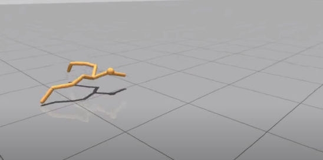
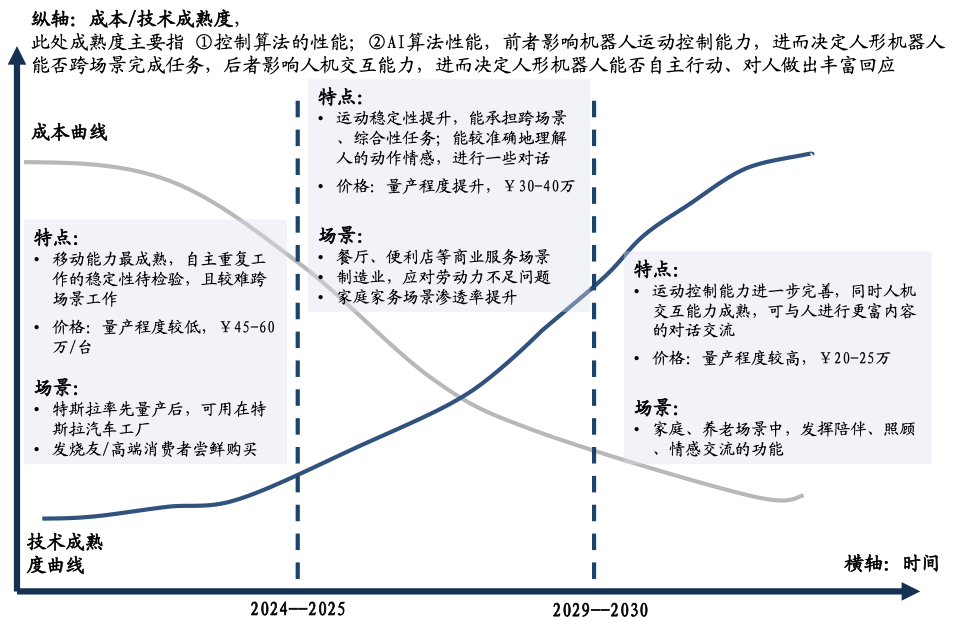
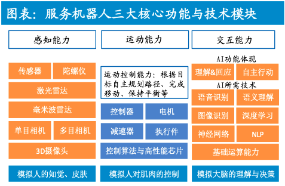
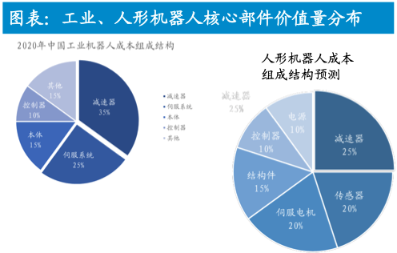

具身智能
具身智能作为当下最火的学界业界方向之一，在此从学界和产业的角度对其做一个调研。
💡 本文致力于回答以下问题：
- 什么是具身智能？如何理解具身智能？
- 当前具身智能的研究来到了什么位置？
- 如何理解具身智能的产业逻辑？
- 具身智能上下游产业链条有什么？各有什么例子？有什么产业预期？
- 本文从定义出发，再由学界到产业界调研。
- 本文未深入上下游具体公司。
- 本文未对具体数据进行定量调研分析。
具身智能
1. 什么是具身智能？
CCF 定义
实质：强调有物理身体的智能体通过与物理环境进行交互而获得智能的人工智能研究范式。
定义：具身智能是指一种基于物理身体进行感知和行动的智能系统，其通过智能体与环境的交互获取信息、理解问题、做出决策并实现行动，从而产生智能行为和适应性。
出处
1950年，图灵在其为人工智能奠基、提出图灵测试的经典论文《Computing Machinery and Intelligence》的结尾展望了人工智能可能的两条发展道路：
- 一条路是聚焦抽象计算（比如下棋）所需的智能。
- 另一条路则是为机器配备最好的传感器、使其可以与人类交流、像婴儿一样地进行学习。
这两条道路便逐渐演变成了非具身和具身智能。前者即为我们当下普遍理解的 AI（以算法为中心），后者可以简单理解为 AI 与 Robots 的一个强交叉。
2. 具身智能：从概念上深入一些
研究目标
探究如何使得智能体通过与环境产生交互后，通过自身的学习进化，产生对于客观世界的理解和改造能力。换句话说，如何使得机器人获得自主学习和操作能力。
目前主要包含三大研究方向：
- 感知与表示：以何种方式对环境进行观测与建模。
- 学习和适应：对于建模好的环境，如何自适应任务场景并做出决策规划。
- 动作与控制：依据算法的决策，通过控制系统以物理动作输出。
具身智能特性（两个维度）
具身（强调物理世界）
- 环境角度：认知不能脱离物理世界存在。
- 智能体角度：认知对身体本身的形式依赖。身体参与了认知，影响了思维、判断等心智过程。
- 交互角度：有着物理环境交互能力。
- 概念角度：具身的概念是可检验、可测量的。（非责任心、荣誉、感情、欲望等主观概念）
智能（强调决策过程）
- 学习能力：智能体（生物或机械）通过与环境产生交互后更新决策逻辑。
- 决策能力：有着自主智能决策能力（AI），即在环境中，通过输入当前状态可以返回决策。
- 泛化能力：机器在面对没见过的场景时，也能较好的进行决策。
个人当下对具身智能的理解
- 具身智能主要针对于物理世界来设计智能化，期望智能体能够在物理世界中完成任务。
- 要求智能体可以接受物理信息（通过传感器）
- 要求智能体可输出物理动作（通过控制系统）
- 可对环境产生改变，例如机械手抓取任务等。
- 可不对环境产生改变，例如无人机自动巡航任务等。
- 或要求智能体在交互过程中，建立并更新智能策略。
- 物理世界有着以下关键特点
- 状态空间极大：即可以被传感器捕捉的状态多样，同时传感器的种类多样
- 噪音极高：可能来自于传感器、气候等因素
- 具身智能体有着以下特点
- 通常由传感器、控制系统、智能系统组成。
- 智能体之间或存在细微差别，可能来源于制造因素、也可能来源于相似类型的不同设计。
- 在物理环境中训练智能的过程（个人粗浅理解）
- 可以看做某种预训练模型基于真实场景自适应，通过小样本学习或者某种 finetune。
- 通常需要利用模仿学习或者强化学习的方式来构建基础模型。
3. 发展脉络
为什么当下强调具身智能？
- 具身智能是多个学科交叉互助的产物，当前一系列基石研究已有了长足的发展，表现为：
- 机器人学为具身智能供机械身体和基本运动控制；
- 深度学习中的神经网络可以作为具身智能中主要工具；
- 强化学习以是具身智能机器人的主要学习手段之一；
- 机器视觉给具身智能提供了处理视觉信号的能力；
- 计算机图形学开发的物理仿真环境为具身智能提供了真实物理世界的替代；
- 自然语言给具身智能带来了与人类交流、从自然文本中学习的可能；
- 认知科学进一步帮助具身智能体理解人类、构建认知和价值。
- 得益于其他交叉学科的落地，具身智能产业相关链条已有基本的雏形。
- 互当前离身智能系统物理交互能力的缺失成为了当今通向通用人工智能的瓶颈。
近期发展时间线（重要事件）
- 2017年第一届机器人学习大会CoRL(Conference on Robot Learning)召开，机器人学习领域涌现了大量新的智能任务、算法、环境。在之后的1-2年，具身智能任务开始逐渐涌现。
- 2018、2019年的CoRL会议上，大量的具身智能学术任务开始被提出并受到关注，包括具身视觉导航、具身问答系统等。
- 2019-2022，国际学术社区举办了多个以具身智能为主题的研讨会和挑战赛，例如CVPR 2019举办的具身智能挑战赛和研讨会(Habitat: Embodied Agents Challenge and Workshop)以及CVPR 2020到2022的具身智能研讨会(Embodied AI Workshop)。
- 2023年5月英伟达创始人兼首席执行官黄仁勋在 ITFWorld2023 半导体大会上，认为人工智能下一个浪潮将是“具身智能”，即能理解、推理、并与物理世界互动的智能系统。
- 在2023年即将举办的CVPR 2023具身智能研讨会上，组织了包括基于AI Habitat、AI2-THOR、iGibson、Sapien仿真器的物体重排列、具身问答、具身导航和机器人操作挑战赛。
4. 当前研究现状
具身智能研究核心以及难点（不完全整理）
感知与表示
这是具身智能的基石。如何感知其环境，并如何将这些感知信息转化为有用的内部表示，在真实世界中自主行动的前提。例如，物体识别、相对位置识别、地形理解等。
- 多模态信息的整合：机器通常通过多个传感器（如摄像头、激光雷达、触摸传感器等）来感知环境，如何有效地整合和处理这些多模态信息是一个挑战。
- 噪声和不确定性：传感器数据经常伴随噪声和误差，如何从不完美的数据中获得可靠、可信的感知是一个关键问题。
- 实时性：很多应用场景中，机器需要能够快速地处理大量的感知数据，并实时地做出决策。
学习与适应
具身智能强调从经验中学习和适应。意味着机器需要能够根据其与环境的交互来学习新的技能，或在面临未知的情境时进行适应，以处理各种不可预见的任务和环境变化。
- 少量数据学习：与互联网应用中可用的大量数据相比，具身智能系统往往只能访问有限的数据，如何在少量数据上进行有效的学习是一个难点。
- 持续学习：随着时间的推移，环境和任务可能会发生变化，如何使机器能够持续地学习和适应，而不忘记早先学到的知识，是一个挑战。
- 与人类指示的偏差：由于机器人与人类运动学结构的显著差异，机器人观察到的人类指示对其来说可能并不是最理想的方式。
- 安全的探索：在学习新任务或新技能时，机器需要进行探索，但过度的或不恰当的探索可能会导致伤害或损坏，如何进行安全的探索是一个问题。
动作与控制
具身智能需要将学习到的知识转化为实际的、有目的的行动。涉及到如何在复杂的物理环境中进行精确、高效的动作控制，例如如何规划路径，如何操作物体等。这直接影响到机器的实用性和效率。
- 复杂环境中的动作规划：在复杂、变化的环境中规划动作（如导航或操纵物体）是非常困难的，特别是当环境中存在其他动态实体（如人或车辆）时。
- 高维控制问题：具身智能系统，尤其是多自由度的机器人，面临高维度的控制（动作）空间，这使得动作规划和控制更为复杂。
- 实时反应和调整：在很多情况下，机器需要能够快速地对突发事件做出反应，并实时调整其动作。
近期研究进展
仅不完全统计，仅涵盖一些重要角度，每一个角度都可以顺藤摸瓜深度下去。
仿真方面
- 2021 李飞飞团队开发了一个被称作“进化游乐场”的环境，论文 Embodied Intelligence via Learning and Evolution，发表在 Nature Communication。

- 2023 通过使用数据手套（data glove）来采集人在完成操作任务时与物体的交互数据，并让机器人从中学习。
数据方面
- 2023-07 在真实环境中，人类可以遥控操作机器人来采集专家数据，通过模仿学习算法来训练机器人习得技能或交互策略。RH20T 提供了一个 20TB 级别的大规模多模态模仿学习数据。
大模型方面
- 预训练语言大模型和多模态大模型（例如 CLIP、ViLD 和 PaLI）作为基础模型为具身智能体在复杂场景中执行长程任务提供了支持。
- 微软提出 ChatGPT + 机器人思路。
- 谷歌推出了Say-Can 基于语言推理的机器人操作。
- 2023-03 来自谷歌和德国林工业大学的一组人工智能研究人员公布了史上最大视觉语言模型 PaLM-E。其包括了 40B 语言模型与 22B 视觉 ViT 模型，将大模型能力泛化至CV领域，赋予大模型视觉能力。（视觉 - 语言大模型）
- 将具身智能理解为大模型代理任务，可参考最新的调研报告 The Rise and Potential of Large Language Model Based Agents: A Survey。
- 机器人的视觉 - 语言 - 动作（VLA）大模型
- 2023-08 谷歌 DeepMind 推出了第一个控制机器人的RT-2。
- 2023-10 DeepMind 汇集了来自 22 种不同机器人类型的数据，以创建 Open X-Embodiment 数据集，然后在之前的模型（RT-1 和 RT-2）的基础上，训练出了能力更强的 RT-X（分别为 RT-1-X 和 RT-2-X）。
国际国内学者（不完全）
- 卢策吾 -上海交通大学
- 王鹤 - 北京大学
- 李飞飞 - 斯坦福大学
💡 以上是学界的具身智能进展。之后我们从产业的角度展开，我们先分析产业整体的逻辑，再进行上下游的梳理。
5. 产业逻辑
分析思路
- 假设最终的目标完成度。
- 探讨目标完成度的商业价值、社会价值以及市场规模。
- 目标完成度的技术成熟路径，以及不同时间节点的产业状况。
- 上游成本变化路径，其直接影响下游应用范围。
- 在不同时点的完成度下，下游应用的变化。
- 一些影响产业发展的因素，比如政策。
目标完成度
- 高智能人形机器人（通用、专用）
- 有着与人相似的机械复杂度（动作空间）。
- 有着与人一定程度相似或超越的泛化决策能力。
- 高品质机器系统（专用）
- 以一种面向特定类别任务的，具有高效物理结构的形式存在。
- 具有面向特定任务的泛化决策和控制能力。
具身智能的价值
替代人类（解放人力、降低成本）
- 具有高风险的、不宜人类参与的重要任务。
- 具有重复性、枯燥复杂但具有价值的任务。
辅助人类（增强人力、降低成本、化不可能为可能）
- 人类能力扩展，机器快速操作、精细工艺辅助。（医疗机器、外骨骼、增强感知等）
技术成熟路径
- 人机交互（指令理解）和视觉环境理解问题已经取得突破性提升。
- 现有 GPT 等大语言模型已经开始应用，机器人可以听得懂人的语言指令。
- 现有多模态大模型使得视觉环境的高质量理解成为了可能。
- 机器人的决策能力依赖于指令理解和环境理解（当前基于大模型范式），需要下一步提升。
- 决策能力包含分析、推理、判断等能力。
- 通常采用深度学习、神经网络、强化学习等学习手段。
- 最后解决机器人的执行能力，让机器人处理现实中的复杂任务。
- 这一步并不一定要在最后，可以与 2 同步进行。
- 最后的目标是达到完美控制效果（强依赖于决策质量）。
- 执行能力更多可能需要关注输出决策和控制行为的对齐。
成本变化路径
从产业链条来看，似乎具身智能所有的上游（通用）零部件都已经有成熟的制造工艺（依赖于机械、AI 多年的发展）。但是专用于具身智能体的上游制造仍需考虑以下几个问题：
- 部件小型化带来的技术挑战，导致的高成本。
- 由于具身智能对于某些零件高标准要求带来的高成本。
- 标准统一前、规模化之前，由于出货量低带来的高成本。
随着具身智能产品的发展和标准统一，上游出货量增大，成本通常预期会下降。
商业发展脉络
机器人类型排序
考虑到降本周期（成本是否可负担）、应用难度（泛化性能是否足够）、市场接受度（带来的价值大小）等因素，我们认为最先应用的落地的可能是价格不敏感的、应用难度较低、市场接受度较高的机器人类型。

商用服务机器人:（已经在大量使用）
接待机器人、迎宾机器人、服务机器人、导购机器人等，商用场景的价格敏感度较低，应用场景简单，市场接受度高，或成为最先落地的场景。
特定行业的功能型机器人:
电力巡检类操作类机器人、轨道交通的检修机器人、矿山里的机器人、农业机器人、建筑机器人等，此类环境危险恶劣，对机器人的需求度高价格不敏感。
家庭服务机器人:
家务机器人、陪伴机器人等，toC 场景的价格敏感度较高，并且家庭是非结构化环境，外部环境和任务较为复杂，技术上难度大，因此落地进度或慢于 toB 场景。
通用人形机器人:
人形机器人具有最完善的具身智能，能够集成各项人工智能技术，也是最为通用的机器人类型，潜在应用空间最为广阔，或成为机器人的终极形态。
市场规模
在技术成熟 + 成本下降的背景下，市场规模会逐步增大，详细信息可以参考东吴证券研报。研报中市场规模的推导比较简单粗暴，可作为一个参考思路。其认为至 2035 年，家庭陪伴机器人规模将达到 3 - 4.2 万亿元。
政策因素
此处不赘述，国内对于 AI 这些行业一向是十分鼓励的（科研+产业），下面是一些例子：
- 北京市发布《北京市促进通用人工智能创新发展的若干措施（2023-2025年）（征求意见稿）》，提出探索具身智能、通用智能体和类脑智能等通用人工智能新路径，包括推动具身智能系统研究及应用，突破机器人在开放环境、泛化场景、连续任务等复杂条件下的感知、认知、决策技术。
6. 产业链条梳理
下游应用方向
此处我们仅仅谈论场景（实际需求），不考虑实现难度，尽量不谈论产品形态。实现难度和形态需要与业务强绑定，此处时间关系不深入探讨。
服务场景
- 商用场景：接待机器人、迎宾机器人、服务机器人、导购机器人。
- 家庭服务：家政机器机器人、陪伴机器人、亲子机器人、安全监护机器人
- 社会场景：搜救机器人
- 教育场景：教育机器人
- 交通场景：无人汽车
- 医疗场景：医疗辅助机器人
工业场景
- 制造场景：加工机器人、装配机器人
- 物流场景：搬运机器人
- 探测场景：探测机器人、无人机
- 战争场景：战争机器人/狗、无人机
科研场景
- 实验场景：实验员机器人
一些公司及产品
具有产品的公司：
- 星尘智能，腾讯RobticsX机器人实验室一号员工来杰创业。产品形态为轮式底盘+人形上身，面向科研场景。
- 特斯拉推出人形机器人擎天柱 Optimus。同时特斯拉的 Dojo AI 超级计算机项目用于加速训练和推理具身智能模型。
- 波士顿动力 Atlas 和 Spot 就具备接近具身智能的能力，它们可以通过机器人的身躯来模拟人类或动物的行为和动作，更加逼真地与人类进行互动。
- 机器人初创公司 Vayu Robotics，Geoffrey Hinton 加入。Hinton 认为它们的技术路线（工业机器人）和其他很多AI应用相比，AI道德风险更低。
- 小米人形机器人 Cyber One。
- 柏楚电子：智能焊接机器人。
- 萤石网络：BS1 清洁机器人（扫地机器人）。
- 越疆机器人：工业协作机器人、教育机器人。
公司实验室：
- 腾讯：Robotics X
- 阿里云：千问大模型接入工业机器人
上游技术支撑
此处或许需要讨论具身智能体相比于传统的机器人来说，会对上游的哪一个环节提出更高的质量数量以及创新要求。但是这一点通常需要和具体下游应用绑定，时间原因此处不过多展开。


- 感知系统：此处的技术栈和自动驾驶的技术栈较大重叠
- 视觉传感器
- 激光雷达
- 毫米波雷达
- 力度、温度、陀螺仪等传感器
- 控制与执行系统：
- 控制器：为执行装置提供正确控制信号，生成控制指令。（似乎各大厂商差距不大，差异主要在于软件算法）
- 减速器：降低输入的速度并同时增加输出扭矩的机械设备。通过这种方式，减速器能够使机械运动更为稳定，提高输出扭矩，以便于驱动更大的负载。
- 伺服系统：根据控制器生成的指令，驱动和控制机器人的关节和电机，以实现精确和高效的运动控制。
- 电机系统：应用于人形机器人的机械手部、身体关节（占据主要的价值量）
- 电力驱动系统：为机器人提供动力，包括电池、电源等。
- 运算交互系统：
- 运算单元：云服务、GPU、CPU、AI 处理器
- 行为逻辑：AI 相关理解与规划技术，自主行动。
- 仿真系统：决策逻辑训练场
- 控制技术：高性能的控制算法
7. 一些值得注意的风险
- 降本速度低于预期：机器人普及很大程度依赖于上游降本，如果成本下降幅度低于预期，可能导致市场放量较慢。
- 大模型技术痛点：包括可信、可靠性等方面。
- 基础设施不及预期：若 AI 基础设施不及预期，大模型训练或无法完成。
- 伦理风险：具身智能可能会生产违反常规、违背法律和道德的行为。
8. Reference
- 国泰君安证券：具身智能，人工智能的下一个浪潮
- 具身智能 | CCF专家谈术语
- 人形机器人行业深度报告：聚焦“具身智能”，产业化提速 - 未来智库的文章 - 知乎
- A Survey of Embodied AI: From Simulators to Research Tasks
- The Rise and Potential of Large Language Model Based Agents: A Survey
- 具身智能专题研究：解耦还是耦合？从AI化到工程化！
- AI浪潮下一站:具身智能 ****